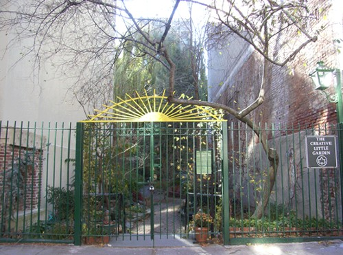

We are witnessing a “greening” of our society. This is reflected in the number of associations being created in urban areas that focus on raising awareness of environmental issues or protecting certain species of wildlife, as well as in the attitudes of urbanites themselves. In 2008, 72% and 75% of French people, respectively, declared that they often made use of the green spaces in their municipality and that the presence of such spaces was a factor in their residential choices. Furthermore, one in every two French citizens said that they would be in favour of laws that made it compulsory to include a minimum percentage of green spaces in all new housing and business developments, while two in three of the population felt that public spending on parks and gardens was too low (UNEP–IPSOS 2008).

The Creative Little Garden, East Village, Manhattan, New York City (November 2007)